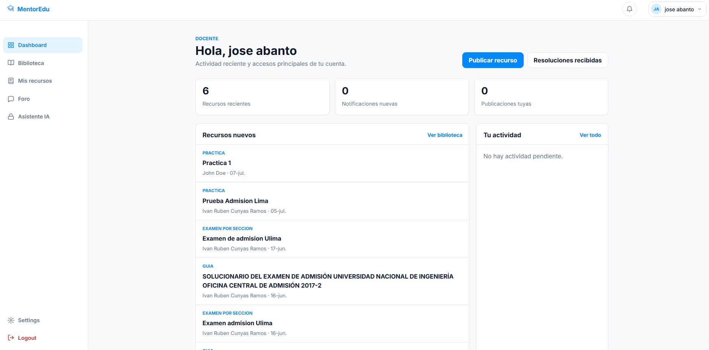
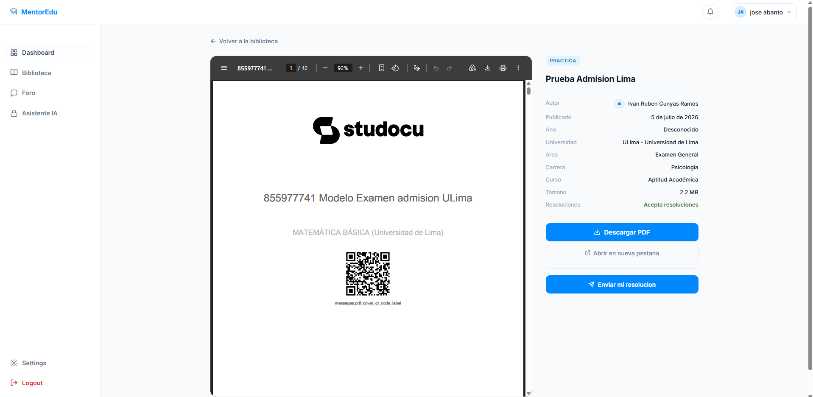
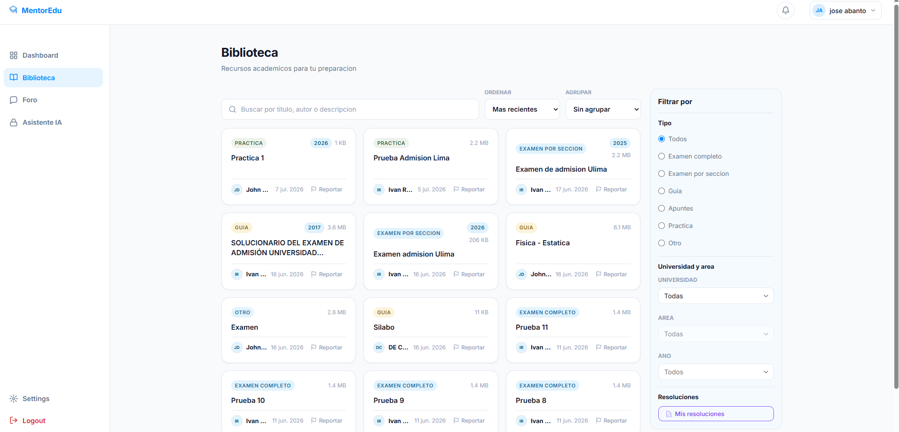
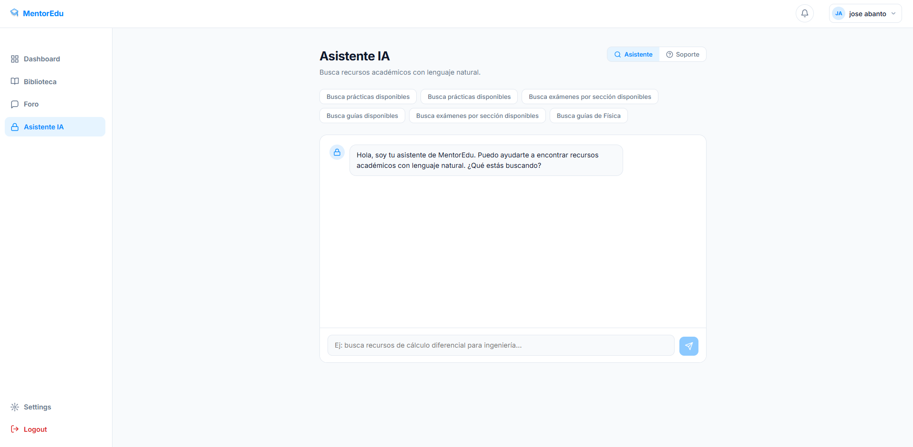
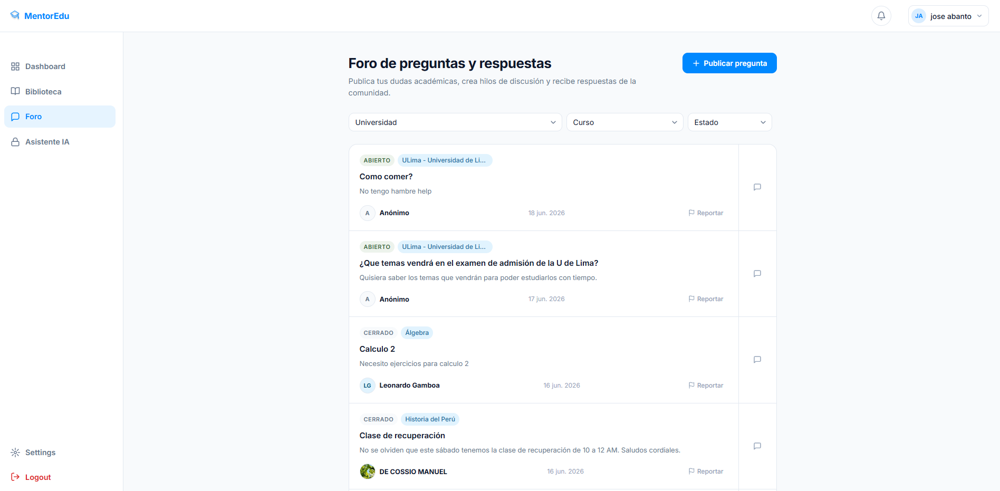

Accede a exámenes anteriores, guías de estudio, apuntes y prácticas organizados por universidad, carrera y curso. Descarga lo que necesitas o comparte tu propio material.
Crea hilos de consulta, responde preguntas académicas y reacciona al contenido de otros usuarios.
Docentes publican ejercicios sin solución. Resuelve y envía tu trabajo para recibir retroalimentación personalizada.
Busca recursos académicos con lenguaje natural y encuentra prácticas, guías o exámenes sin navegar filtros complejos.
Sube material educativo, publica ejercicios y da retroalimentación que realmente impacta en el aprendizaje de tus estudiantes.

MentorEdu permite a los docentes y academias compartir su material con los estudiantes que más lo necesitan. Sube tus recursos, publica ejercicios y construye tu reputación académica con el respaldo de la verificación oficial.

Con MentorEdu, los estudiantes acceden a material académico organizado por su universidad, carrera y curso. Participan en el foro para resolver dudas y envían resoluciones a los ejercicios para recibir retroalimentación personalizada de docentes reales.
Explora un repositorio de exámenes, prácticas, guías y apuntes filtrados por universidad, carrera y curso para estudiar con recursos relevantes cuando los necesites.

El Asistente IA te ayuda a buscar recursos académicos con lenguaje natural. Pide prácticas, guías o exámenes por curso, tema o universidad y encuentra material relevante más rápido.

Publica preguntas, filtra conversaciones por universidad o curso y recibe respuestas de estudiantes y docentes.

"Encontré los exámenes anteriores de mis cursos más difíciles. Estudiar con material real me ayudó a llegar mucho mejor preparada a cada evaluación."
"Tenía una duda sobre un tema de Estadística y la publiqué en el foro. Un docente verificado me respondió el mismo día."
"Envié mi resolución de un ejercicio y el docente me dejó comentarios detallados. No esperaba ese nivel de atención personalizada."
"Antes de MentorEdu, compartir mis materiales con los estudiantes era complicado. Ahora subo un PDF y llega a quienes realmente lo necesitan. Ver cómo resuelven mis ejercicios y poder darles retroalimentación real es lo que más valoro."
Únete como estudiante, docente o academia. Accede al material de tu carrera, participa en la comunidad y crece junto a otros.